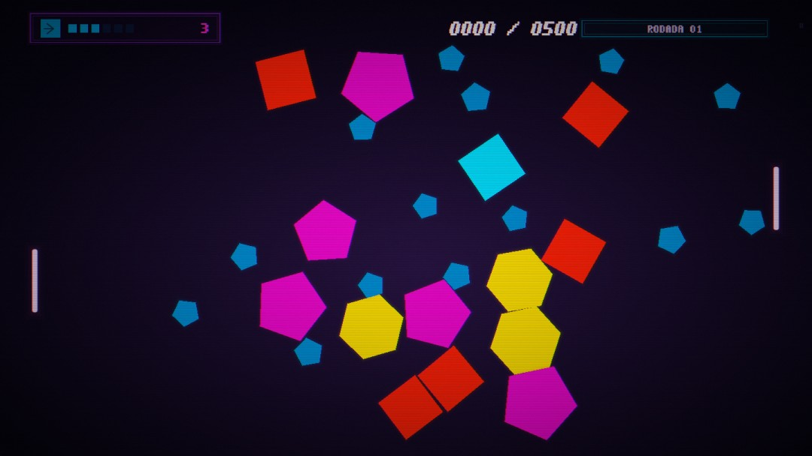

Portfólio de desenvolvimento
Jogos,
código &
experimentos.
Um arquivo de jogos e sites, com um caderno aberto de exercícios para rodar, mexer e testar.
Explorar os estudos ↓
Em destaqueSPLIT — One More Cut ↗
Portfólio de desenvolvimento
Um arquivo de jogos e sites, com um caderno aberto de exercícios para rodar, mexer e testar.
Explorar os estudos ↓